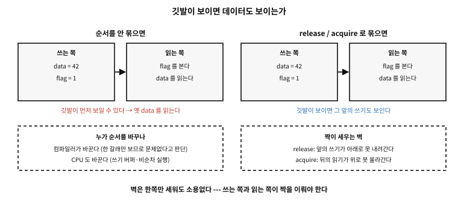

95 쪼개지지 않는 연산 — <stdatomic.h>
먼저 알아야 할 것
돌아보기
13장에서 CPU가 한 박자에 여러 일을 하고 순서까지 바꿔 실행한다고 했고, 12장에서는 코어마다 자기 캐시를 들고 있다고 했다. 그러면 두 갈래가 같은 변수를 동시에 1씩 늘리면 — 결과는 2인가?
답. 아닐 수 있다. x = x + 1은 기계에게 한 걸음이 아니라 세 걸음(읽고, 더하고, 쓰고)이고, 두 갈래가 이 세 걸음을 서로 끼워 넣으면 둘이 같은 값을 읽어 같은 값을 쓴다 — 더하기 하나가 통째로 사라진다. 코어마다 캐시가 따로 있으면 “썼는데 상대에게 안 보이는” 시차도 그 원인의 하나가 된다. 94장의 첫 시연이 그 손실을 한 번 돌린 값으로 보였다.
이 장의 필요성과 맥락
이 장이 끝나면
volatile이 왜 답이 아닌지, 그리고 메모리 순서(memory order)라는 어려운 손잡이를 언제 건드리고 언제 두어야 하는지까지.이 장에서 답할 질문
compare_exchange의 strong과 weak은 무엇이 다른가? 왜 “헛되이 실패” 하는 판이 따로 있는가?
95.1 원자적 갱신 — 같은 셈을 쪼개지지 않게#
94장의 첫 시연에서 보호 없는 카운터는 80만 근처에도 못 갔다. 그 값은 한 번 돌린 관찰이고 실행마다 다르다. 게다가 그 실행은 데이터 경쟁이라, 값이 우연히 80만으로 맞게 나왔어도 아무것도 증명하지 않는다. 그래서 이 장의 시연은 경쟁하는 변수를 섞지 않고 원자적 변수 하나만 늘린다.
examples/atomics/atomic.c
/* 원자적 갱신 — 네 갈래가 한 카운터를 쪼개지지 않는 연산으로만 늘린다.
보호 없는 카운터의 경쟁은 94장의 첫 시연이 보였다. 같은 실행에 섞지 않는다:
경쟁이 하나라도 있으면 그 실행 전체가 정의되지 않으므로, 옆의 원자 카운터 값도
아무것도 증명하지 못한다. */
#include <stdatomic.h>
#include <stdio.h>
#include <stdlib.h>
#include <threads.h>
#define THREADS 4
#define BUMPS 200000
static atomic_long count; /* 원자적 long */
static int worker(void *unused)
{
(void)unused;
for (int i = 0; i < BUMPS; i++)
atomic_fetch_add(&count, 1); /* 읽고-더하고-쓰기가 한 덩어리로 일어난다 */
return 0;
}
int main(void)
{
thrd_t t[THREADS];
int made = 0;
for (; made < THREADS; made++)
if (thrd_create(&t[made], worker, NULL) != thrd_success)
break;
/* 만든 갈래는 실패했든 아니든 모두 기다린다 */
bool joined = true;
for (int i = 0; i < made; i++)
if (thrd_join(t[i], NULL) != thrd_success)
joined = false;
if (made < THREADS || !joined) {
fprintf(stderr, "created %d of %d threads, joined all: %s\n",
made, THREADS, joined ? "yes" : "no");
return EXIT_FAILURE;
}
/* 여기까지 왔으면 네 갈래 모두 만들어졌고 모두 끝났다 --- 이때에만 80만이 보장된다 */
printf("expected: %ld\n", (long)THREADS * BUMPS);
printf("atomic : %ld\n", (long)atomic_load(&count));
printf("\nis atomic_long lock-free? %s\n",
atomic_is_lock_free(&count) ? "yes" : "no");
return 0;
}
실행 결과
expected: 800000
atomic : 800000
is atomic_long lock-free? yes
같은 루프를 네 갈래가 20만 번씩 돌았고, 원자적(atomic) 변수는 80만이다. 갈래의 생성과 합류가 모두 성공했다면 이 값은 늘 같다 — atomic_fetch_add가 “읽고-더하고-쓰기”를 쪼개질 수 없는 한 덩어리로 해내고, thrd_join이 갈래가 한 일을 기다린 쪽에 모두 보이게 하기 때문이다. 시연이 생성과 합류의 결과를 하나하나 확인하고, 하나라도 실패하면 값을 찍지 않고 끝나는 까닭이 이것이다. 원자(原子)라는 이름이 그 뜻이다 — 더 이상 쪼개지지 않는 것.
흔한 오해. “경쟁 상태는 값이 가끔 어긋나는, 확률적인 성능 문제다”
두 겹으로 틀렸다. 첫째, 값이 어긋나는 것이 아니라 계약이 깨진다. C11 이후의 표준은 이렇게 정한다 — 두 갈래가 같은 기억을 동시에 만지고 그중 하나라도 쓰기이며 원자적이지도 순서 지어지지도 않았다면, 그것은 데이터 경쟁이고 프로그램 전체가 정의되지 않은 동작이다(56장). “값이 하나 틀리는” 정도로 끝난다는 보장이 없다는 뜻이다.
둘째, 컴파일러가 이 전제 위에서 최적화한다. 경쟁이 없다고 가정하고 변수를 레지스터에 올려 두면, 상대가 아무리 값을 바꿔도 이쪽 루프는 영원히 옛 값만 본다. 실제로 “디버그 빌드에서는 되는데 릴리스에서 멈추는” 무한 루프의 흔한 정체가 이것이다(18장의 릴리스 전용 버그가 여기서 재현된다).
95.2 volatile은 왜 답이 아닌가#
오래된 C 코드에서 volatile int flag;로 갈래 사이 신호를 주고받는 관행을 자주 본다. 지금은 틀린 관행이다. volatile이 약속하는 것은 하나뿐이다 — 컴파일러가 이 접근을 없애거나 합치지 않는다. 52장에서 본 대로 그 목적은 하드웨어 레지스터(값이 바깥에서 바뀌는 자리)였다.
volatile이 약속하지 않는 것이 둘이다. 원자성 — volatile long x;의 x++도 여전히 세 걸음이라 쪼개진다. 그리고 순서와 가시성 — CPU가 쓰기 순서를 바꾸거나 다른 코어에 늦게 보이는 것을 막지 못한다.
| 쪼개지지 않음 | 코어 사이 가시성 | 재배열 차단 | |
|---|---|---|---|
volatile | 아니오 | 아니오 | 아니오(다른 접근 대비) |
_Atomic | 예 | 예 | 예(선택한 순서만큼) |
| 뮤텍스 | 예(구간 전체) | 예 | 예 |
표 95.1 — volatile·_Atomic·뮤텍스가 주는 세 가지 보장
정리하면 이렇다. 하드웨어 레지스터에는 volatile, 갈래 사이 공유에는 원자적 타입이나 뮤텍스. 자바나 C#의 volatile은 이름만 같고 의미가 달라서(그쪽은 실제로 가시성을 보장한다), 그 언어의 습관을 C로 들여오는 것이 흔한 사고의 통로다.
95.3 원자적 타입과 연산#
쓰는 법은 단순하다. 타입 앞에 _Atomic을 붙이거나, 헤더가 주는 이름 (atomic_int, atomic_long, atomic_bool, atomic_size_t …)을 쓴다.
#include <stdatomic.h>
atomic_int counter = 0; /* = _Atomic int */
_Atomic long total;연산은 함수(또는 그 이름의 매크로)로 부른다. 평범한 연산자(++, +=)를 써도 원자적으로 동작하지만, 원자적이라는 사실이 코드에 보이지 않아 읽는 사람이 놓치기 쉬우므로 명시적 함수를 권한다.
| 연산 | 하는 일 | 쓰는 자리 |
|---|---|---|
atomic_load | 읽기 | 현재 값 보기 |
atomic_store | 쓰기 | 값 설정 |
atomic_fetch_add·_sub | 더하고 이전 값 반환 | 카운터·통계 |
atomic_fetch_or·_and·_xor | 비트 조작 | 플래그 집합 |
atomic_exchange | 바꾸고 이전 값 반환 | 자리 교체 |
atomic_compare_exchange_strong | 기대값과 같을 때만 바꾼다(CAS) | 잠금 없는 자료구조 |
atomic_compare_exchange_weak | 같지만 헛되이 실패할 수 있다 | 루프 안에서 |
atomic_flag_test_and_set | 가장 원시적인 시험-설정 | 스핀락 |
표 95.2 — 원자적 연산과 쓰는 자리
fetch_add가 이전 값을 돌려준다는 점이 자주 헷갈리는 자리다. “몇 번째 인지”를 얻고 싶으면 반환값을 쓰고, “지금 얼마인지”를 알고 싶으면 반환값에 더한 수를 보탠 값이거나 별도의 atomic_load다 — 그런데 후자는 그사이 또 바뀔 수 있다.
95.3.1 CAS — 「그대로면 바꿔라」#
fetch_add 같은 연산은 「더하기」라는 정해진 갱신만 해 준다. 그런데 실무의 갱신은 대개 조건이 붙는다 — 「한도를 넘지 않으면 올려라」, 「지금 값보다 크면 바꿔라」, 「이 상태일 때만 다음 상태로 넘겨라」. 이런 것은 읽고 → 판단하고 → 쓰기의 세 걸음이고, 그 사이에 남이 끼어들 수 있다.
그래서 나온 것이 비교 교환(CAS, compare-and-swap)이다. 발상은 한 문장이다.
내가 읽었던 값이 아직 그대로면 바꿔라. 아니면 바꾸지 말고 알려 달라.
C 의 이름은 atomic_compare_exchange_strong(과 _weak)이고, 계약은 이렇다.
bool atomic_compare_exchange_strong(A *object, C *expected, C desired);object의 현재 값이*expected와 같으면 —desired를 넣고true를 준다.- 다르면 — 아무것도 바꾸지 않고
false를 주되, ★*expected에 현재 값을 적어 준다(§7.17.7.4 p3).
둘째 줄의 「적어 준다」가 이 함수를 쓰는 모양을 정한다. 실패했을 때 최신 값이 손에 들어오므로, 다시 읽을 필요 없이 그대로 다시 시도하면 된다. 그래서 CAS 는 거의 언제나 루프로 쓰인다.
int cur = atomic_load(&x);
int next;
do {
next = f(cur); /* 어떤 갱신 규칙이든 */
} while (!atomic_compare_exchange_weak(&x, &cur, next));★ 이 다섯 줄이 CAS 가 만능 도구인 이유다. f 자리에 무엇을 넣든 — 조건부 증가든, 최댓값 갱신이든, 상태 기계의 전이든 — 그 갱신이 원자적으로 이뤄진다. 실제로 fetch_add 조차 이 루프로 만들 수 있다(하드웨어가 직접 해 주니 그럴 이유가 없을 뿐).
| 기계 | 내는 것 | 그래서 |
|---|---|---|
| x86-64 | lock cmpxchg — 명령 하나 | 값이 같으면 반드시 성공한다 |
| RISC-V·ARM 계열 | 예약해 읽고 조건부로 저장하는 명령 쌍(RISC-V lr/sc, ARM ldxr/stxr) | 예약이 풀리면 값이 같아도 실패할 수 있다 |
표 95.3 — CAS 는 기계마다 다른 방식으로 이뤄진다
둘째 줄이 뒤에 나오는 문답의 「가짜 실패」다. 예약은 값이 아니라 그 자리에 걸리므로, 다른 코어가 같은 캐시 줄을 건드리거나 인터럽트가 한 번 끼어들기만 해도 풀린다.
흔한 오해. CAS 가 성공했으니 그사이 아무도 그 값을 건드리지 않았다
아니다. CAS 가 보는 것은 값이지 역사가 아니다. 내가 읽은 값이 A 였는데 그사이 남이 B 로 바꿨다가 다시 A 로 되돌려 놓았다면, CAS 는 「그대로군」 하고 성공한다. 이것을 ABA 문제라 한다.
숫자 카운터에서는 대개 해가 없다. 문제가 되는 곳은 포인터다 — 그 주소의 노드가 해제되었다가 우연히 같은 주소로 다시 할당되었을 수 있다. 그래서 잠금 없는 자료구조는 값에 세대 번호를 붙이거나(태그된 포인터), 해제 시점을 미루는 장치를 함께 쓴다. ★ 이것이 「자료구조는 직접 짜지 않는다」는 이 장의 권고가 진심인 이유다.
반례. 원자적 연산을 여러 번 부르면 그 묶음도 원자적이라고 믿기
if (atomic_load(&count) < LIMIT) /* ① 읽고 */
atomic_fetch_add(&count, 1); /* ② 더한다 — 그사이 남이 끼어든다 */①과 ② 사이에 다른 갈래가 값을 올리면 한도를 넘긴다. 원자성은 연산 하나의 성질이지 구간의 성질이 아니다. 구간을 지키려면 CAS 루프로 묶거나 뮤텍스를 쓴다.
int cur = atomic_load(&count);
do {
if (cur >= LIMIT) break; /* 한도 검사와 갱신을 한 덩어리로 */
} while (!atomic_compare_exchange_weak(&count, &cur, cur + 1));실패하면 cur에 현재 값이 담겨 돌아온다는 것이 이 관용구의 핵심이다. 그래서 루프 안에서 다시 읽을 필요가 없다.
문. compare_exchange의 strong과 weak은 무엇이 다른가? 왜 “헛되이 실패” 하는 판이 따로 있는가?
답. 일부 CPU(ARM 계열 등)는 CAS를 “예약하고-나중에-조건부로 쓰기”라는 두 명령 쌍으로 구현한다. 그사이 인터럽트나 캐시 사정으로 예약이 풀리면, 값이 기대와 같았는데도 실패로 돌아온다 — 이것이 가짜 실패(spurious failure)다. weak은 이 실패를 그대로 노출하는 대신 더 빠르고, strong은 내부에서 다시 시도해 “값이 달랐을 때만 실패”를 보장하는 대신 조금 느리다.
규칙은 간단하다. 루프 안에서는 weak, 루프 없이 한 번만 시도할 때는 strong. 어차피 루프가 다시 돌 것이므로 가짜 실패가 해롭지 않고, weak 의 속도 이득만 남는다.
95.4 메모리 순서 — 건드리지 않는 것이 기본#
95.4.1 왜 「순서」가 문제가 되는가#
원자성은 「쪼개지지 않음」이었다. 순서는 다른 질문이다 — 내가 적은 차례대로 남들이 보는가.
답은 「아니다」이고, 순서를 바꾸는 범인이 둘이다.
- 컴파일러가 바꾼다. 한 갈래만 놓고 보면 결과가 같으니 더 빠른 차례로 옮겨 적는다 (14장의 편집자).
- CPU 도 바꾼다. 쓰기를 버퍼에 모았다가 내보내고, 준비된 명령부터 먼저 실행한다 (13장).
둘 다 혼자 도는 프로그램에게는 들키지 않는다. 자기가 쓴 값은 자기가 제대로 읽으니까. 문제는 옆에서 다른 갈래가 볼 때 드러난다.

그림 95.1 — 깃발이 보이면 그 앞의 데이터도 보이는가.
그림 95.1이 그 상황이다. 쓰는 쪽은 자료를 채우고 깃발을 세운다. 읽는 쪽은 깃발을 보고 자료를 읽는다. 사람의 눈에는 당연해 보이는데, 순서를 묶지 않으면 깃발이 자료보다 먼저 도착할 수 있다. 그러면 읽는 쪽은 「준비됐다」는 신호를 보고도 준비되기 전의 값을 읽는다.
95.4.2 짝이 벽을 세운다 — release 와 acquire#
그래서 짝을 쓴다. 쓰는 쪽은 깃발을 release 로 세우고, 읽는 쪽은 깃발을 acquire로 읽는다.
/* 쓰는 쪽 */ /* 읽는 쪽 */
data = 42; if (atomic_load_explicit(
atomic_store_explicit( &flag, memory_order_acquire)) {
&flag, 1, memory_order_release); use(data); /* 42 임이 보장된다 */
}두 낱말의 뜻은 방향이다. release 는 「앞의 쓰기들이 이 지점 아래로 내려가지 못한다」, acquire 는 「뒤의 읽기들이 이 지점 위로 올라가지 못한다」. 한쪽만 세우면 소용이 없다 — 벽은 두 쪽이 짝을 이룰 때 선다.
★ 그리고 이 짝이 보장하는 것은 깃발 하나가 아니다. 깃발이 보이면 그 앞에 쓴 모든 것이 함께 보인다. 그래서 자료 자체는 원자적일 필요가 없다 — 위 코드에서 data 는 그냥 int 다.
95.4.3 순서는 공짜인가 — 재어 본다#
순서를 지키게 하면 얼마나 비싸지는가. 같은 C 코드를 두 기계로 컴파일해 보면 답이 눈에 보인다.
| 지정한 순서 | x86-64 가 내는 것 | RISC-V 가 내는 것 |
|---|---|---|
relaxed | mov — 평범한 저장 | sw — 평범한 저장 |
release | mov — 똑같다 | fence rw,w 를 앞에 붙인 저장 |
seq_cst | xchg — 잠금 붙은 연산 | 앞에 fence rw,w, 뒤에 fence rw,rw |
표 95.4 — 같은 코드가 기계마다 다른 비용을 치른다 — 깃발을 세우는 자리
★ 첫 줄과 둘째 줄이 x86 에서 글자 하나 다르지 않다. 그 기계가 이미 그 순서를 지키기 때문이다. 여기서 이 장의 가장 실질적인 경고가 나온다 — relaxed 로 잘못 쓴 코드는 x86 에서 시험하면 멀쩡히 돈다. 같은 코드가 RISC-V·ARM 에서는 fence 가 빠진 채로 돌아 재현되지 않는 버그가 된다.
셋째 줄은 두 기계 모두에서 비용을 치른다. 기본값인 seq_cst 가 안전한 대신 비싼 이유가 이것이다.
atomic_fetch_add(&x, 1)처럼 순서를 지정하지 않으면 가장 강한 순서인 순차 일관성(memory_order_seq_cst)이 쓰인다. 모든 갈래가 원자적 연산의 순서를 하나의 일관된 이야기로 본다는 뜻이고, 사람이 추론하기 가장 쉬운 모형이다. 대신 가장 비싸다.
C 에는 여섯 가지 순서가 있다. 표로 얼굴만 익힌다 — 대부분의 프로그램은 기본값만 쓰면 된다.
| 순서 | 보장 | 쓰는 자리 |
|---|---|---|
seq_cst | 전역적으로 하나의 순서 | 기본값. 의심스러우면 이것 |
acquire | 이후의 접근이 위로 못 올라감 | 잠금 얻기·소비자 쪽 읽기 |
release | 이전의 접근이 아래로 못 내려감 | 잠금 놓기·생산자 쪽 쓰기 |
acq_rel | 읽고-쓰기 연산에서 둘 다 | CAS 로 상태 전이 |
relaxed | 원자성만. 순서 보장 없음 | 순수 카운터·통계 |
consume | 사실상 폐기(구현이 acquire 로 격상) | 쓰지 않는다 |
표 95.5 — 메모리 순서와 그 보장
가장 흔한 실전 쓰임은 두 가지다. 첫째, 생산자-소비자의 깃발: 데이터를 채운 뒤 release로 깃발을 세우고, 소비자는 acquire로 깃발을 본 뒤 데이터를 읽는다. 이 짝이 “깃발이 보이면 데이터도 보인다”를 보장한다. 둘째, 순수 통계 카운터: 값의 최종 합만 맞으면 되고 다른 데이터와 순서를 맞출 필요가 없으므로 relaxed가 정확히 맞는 도구다.
반례. 성능을 위해 일단 relaxed로 바꿔 보기
atomic_store_explicit(&ready, 1, memory_order_relaxed); /* 깃발 */relaxed는 이 변수의 원자성만 보장한다. 앞에서 채운 데이터가 상대에게 보인다는 보장이 없으므로, 소비자는 깃발이 선 것을 보고도 채워지기 전의 데이터를 읽을 수 있다. 이런 코드는 x86에서는 대개 멀쩡히 돌다가 ARM 기기에서 재현 불가능한 버그로 나타난다 — 하드웨어마다 허용하는 재배열이 다르기 때문이다.
규칙: 깃발과 데이터가 짝을 이루면 release/acquire. 그 짝을 이해하기 전에는 기본값을 그대로 둔다. 여기서 아끼는 나노초보다 잃는 시간이 훨씬 크다.
95.5 잠금 없음(lock-free)이라는 말#
예제 마지막 줄이 atomic_is_lock_free로 물은 것이 그것이다. 원자적 타입이 CPU 명령 하나로 처리되면 잠금 없음이고, 그렇지 않으면 라이브러리가 뒤에서 숨은 잠금을 쓴다. 오늘의 주류 기계에서 포인터 크기 이하의 정수는 대개 잠금 없이 된다. 반면 큰 구조체를 _Atomic으로 감싸면 — 문법은 통과하지만 — 숨은 잠금이 붙어 성능이 뜻밖에 나빠질 수 있다.
흔한 오해. “원자적 연산은 뮤텍스보다 항상 빠르다”
경합이 낮을 때는 대개 맞지만, 경합이 심하면 뒤집힌다. 여러 코어가 같은 캐시 라인을 두고 다투면 그 라인이 코어 사이를 계속 오간다(13장의 거짓 공유가 여기서 재현된다). CAS 루프는 실패할 때마다 다시 도는데, 경합이 심하면 이 재시도가 통째로 낭비다 — 뮤텍스는 실패한 갈래를 재우지만 스핀은 코어를 태운다.
그리고 잠금 없는 자료구조를 직접 짜는 것은 난도가 다른 일이다. ABA 문제(값이 A에서 B로 갔다 A로 돌아와 CAS가 속는 것), 메모리 회수 시점, 진행 보장 — 논문 한 편짜리 주제들이다. 실무의 정답은 대개 이렇다: 카운터와 깃발에는 원자적 타입, 자료구조에는 검증된 라이브러리나 뮤텍스.
95.6 쓸 자리와 쓰지 않을 자리#
| 상황 | 권하는 도구 | 이유 |
|---|---|---|
| 통계 카운터 | atomic_fetch_add(relaxed) | 순서가 필요 없다 |
| 종료 요청 깃발 | atomic_bool + release/acquire | 데이터와 짝을 이룬다 |
| 한 번만 초기화 | call_once(<threads.h>) 또는 CAS | 이중 검사 잠금은 손으로 짜지 않는다 |
| 여러 값의 불변식 | 뮤텍스 | 원자성은 변수 하나 단위다 |
| 큰 구조체 공유 | 뮤텍스 | _Atomic 구조체는 숨은 잠금 |
| 신호 처리기와의 공유 | sig_atomic_t 또는 잠금 없는 원자적 타입 | 91장의 제약 |
| 하드웨어 레지스터 | volatile | 갈래 사이 공유가 아니다 |
표 95.6 — 상황에 권하는 동시성 도구
실제 사례. C11이 메모리 모델을 들여온 이유
C11 이전의 표준에는 갈래가 여럿이라는 개념 자체가 없었다. 스레드는 라이브러리(POSIX 스레드 등)의 일이었고, 언어는 “프로그램이 한 줄기로 흐른다”는 전제 위에서 최적화를 정의했다. 그 틈에서 오랫동안 아무도 정확히 답할 수 없는 질문들이 쌓였다 — 컴파일러가 이 쓰기를 다른 갈래가 본다고 가정해야 하는가, 이 재배열은 합법인가, 뮤텍스 없는 이 코드는 틀린 것인가.
2004년경 자바가 먼저 메모리 모델을 정비했고, C++11과 C11이 그 흐름을 이어 언어 차원의 메모리 모델을 도입했다. 이때 들어온 것이 데이터 경쟁의 정의, 원자적 타입, 그리고 여섯 가지 메모리 순서다. 오늘 우리가 “데이터 경쟁은 정의되지 않은 동작”이라고 한 줄로 말할 수 있는 것은 이 정비 덕분이다 — 그 전에는 그 문장을 적을 언어조차 없었다.
복습 정리
| 기억할 것 | 요지 |
|---|---|
| 데이터 경쟁 | 느림이 아니라 계약 밖. 최적화가 코드를 바꾼다 |
volatile | 갈래 사이 공유의 도구가 아니다. 하드웨어용 |
| 기본 순서 | seq_cst. 대부분 그대로 두는 것이 정답 |
fetch_add | 이전 값을 돌려준다 |
| 연산 두 번 | 묶어도 원자적이 아니다 — CAS 루프나 뮤텍스 |
weak/strong | 루프 안이면 weak |
| 잠금 없음 | 작은 정수는 대개 예. 큰 구조체는 숨은 잠금 |
| 자료구조 | 직접 짜지 않는다 |
표 95.7 — 원자적 연산 — 기억할 것
95.7 자물쇠를 쥔 쪽이 멈추면 — 우선순위 역전과 스핀락#
원자적 연산이 답이 아닌 자리에서는 결국 자물쇠(뮤텍스 같은 잠금)를 쓴다. 그런데 자물쇠에는 원자성과는 다른 종류의 위험이 하나 있다. 자물쇠를 쥔 쪽이 일을 못 하게 되는 것이다.
=== 우선순위 역전 — 낮은 쪽이 높은 쪽을 막는다
셋이 있다고 하자. 급한 일(높은 우선순위), 보통 일(중간), 한가한 일(낮음).
- 한가한 일이 자물쇠를 잡는다.
- 급한 일이 깨어나 같은 자물쇠를 달라고 한다 — 막힌다. 여기까지는 정상이다.
- 그런데 보통 일이 깨어나 한가한 일을 밀어낸다. 우선순위가 높으니까.
- 이제 한가한 일은 돌지 못하고, 자물쇠를 놓지 못하고, 급한 일은 계속 막혀 있다.
결과가 이상하다. 급한 일이 자기보다 낮은 「보통 일」에게 밀린 셈이 된다. 이것을 우선순위 역전(priority inversion)이라 한다. 자물쇠가 잘못된 것도, 원자성이 깨진 것도 아니다 — 우선순위와 자물쇠라는 두 규칙이 만나 서로를 무너뜨린 것이다.
처방은 「쥔 쪽을 끌어올리는」 것이다. 우선순위 상속(priority inheritance)은 급한 일이 막히는 순간 자물쇠를 쥔 쪽의 우선순위를 급한 일만큼 올려 준다. 그러면 보통 일이 밀어내지 못하고, 쥔 쪽이 빨리 끝내고 놓는다.
실제 사례. 화성에서 재부팅을 반복한 탐사선
1997년 화성에 내려앉은 패스파인더가 며칠 뒤부터 스스로 재부팅을 반복했다. 자료를 잃어 가며.1
원인이 정확히 위에서 든 세 작업의 상황이었다. 기상 자료를 모으는 한가한 작업이 정보 버스의 세마포어를 쥔 사이, 중간 우선순위 작업이 끼어들어 그것을 밀어냈다. 버스를 관리하는 아주 급한 작업은 그동안 막혀 있었고, 감시 타이머(워치독)가 「버스 작업이 한참 돌지 않았다」고 판단해 전체를 재시작시켰다.
★ 자물쇠에는 우선순위 상속 기능이 있었지만 성능을 이유로 꺼져 있었다. 지상에서 같은 장비로 며칠간 재현을 시도한 끝에 추적 기록으로 원인을 잡았고, 짧은 코드를 화성으로 올려 보내 그 설정 하나를 켜서 고쳤다.
교훈은 둘이다. 성능을 위해 끈 안전 장치가 무엇을 막고 있었는지 알아야 한다. 그리고 재현되지 않는 버그는 추적을 남기는 수밖에 없다 — 8천만 킬로미터 밖에서는 디버거를 붙일 수 없다.
95.7.1 같은 병의 다른 얼굴 — 사용자 공간의 스핀락#
스핀락(spinlock)은 자물쇠가 열릴 때까지 잠들지 않고 돌며 기다리는 자물쇠다. 임계 구역이 아주 짧을 때는 잠들었다 깨는 비용보다 싸서 이긴다. 그 계산은 하나의 가정 위에 서 있다 — 쥔 쪽이 그사이에 쫓겨나지 않는다.
커널 안에서는 그 가정을 지킬 수 있다. 선점을 잠깐 끄면 된다. 사용자 공간에는 그런 장치가 없다. 쥔 쪽이 스케줄러에 밀려나면, 기다리는 쪽 전부가 아무 진전 없이 CPU를 태운다. 우선순위 역전과 뿌리가 같다 — 쥔 쪽이 멈추는 것이다.
실제 사례. 스핀락을 쥔 채로 페이지 폴트를 맞으면
2026년 4월, 리눅스 7.0 개발 커널에서 PostgreSQL의 처리량이 절반으로 떨어진다는 보고가 올라왔다(pgbench, 클라이언트 1024, 96 vCPU 기계에서 0.51배)2. 프로파일러는 CPU 시간의 55%를 사용자 공간 스핀락에서 쓰고 있다고 가리켰다. 커널이 선점 모형을 바꾼 것이 원인으로 지목되었다.
★ 그런데 파고들어 보니 진짜 원인은 스핀락이 아니었다. 스핀락을 쥔 채로 일어나는 페이지 폴트였다. 100 GB가 넘는 공유 버퍼를 4 KiB 페이지로 받치면 첫 접근마다 폴트가 나고, 그 한 번이 커널로 내려갔다 오는 동안 자물쇠는 잡혀 있다. 큰 페이지(huge page)로 바꾸자 같은 기계에서 처리량이 절반으로 떨어지던 일이 사라졌다.
여기서 얻을 것이 셋이다.
- 임계 구역 안에서는 「경계 없는 일」을 하지 않는다. 그런데 페이지 폴트는 경계 없는 일이면서 코드에 보이지 않는다.
buf[i] = x한 줄이 커널을 다녀오는 일이 될 수 있다 — 신호 처리기에서 할 수 있는 일이 그토록 적은 것과 같은 이유다. - 스핀락은 가정 위에 선다. 그 가정을 지켜 주던 바깥 사정(커널의 선점 모형)이 바뀌면 조용히 무너진다.
- ★ 프로파일러가 가리킨 곳과 원인은 다르다. 시간을 태운 자리는 스핀락이었지만 고쳐야 할 곳은 기억 쪽 설정이었다.
(2026년 8월 현재 진행 중인 사안이다. 커널 쪽은 되돌리기 대신 새 장치를 쓰라고 제안했다 — 사용자 공간이 커널에게 「짧은 임계 구역에 있으니 조금만 더 달라」고 말할 수 있게 하는 방식이다.)
쪼개지지 않는 연산을 보았다. 다음 장은 정반대 방향의 도구다 — 연산이 그릇을 넘쳤는지를 계약대로 물어보는, C23의 검사 산술이다.
주
- Mike Jones. 1997. What really happened on Mars? — JPL 의 Glenn Reeves 가 원인과 고친 과정을 설명한 글을 담았다.
cs.cornell.edu/courses/cs614/1999sp/papers/pathfinder.html↩ - Salvatore Dipietro. 2026. [PATCH 0/1] sched: Restore PREEMPT_NONE as default. Linux kernel mailing list, 2026-04-03.
spinics.net/lists/kernel/msg6138481.html— 페이지 폴트와 큰 페이지로 이어진 원인 분석은 Jonathan Corbet. 2026. The 7.0 scheduler regression that wasn’t. LWN.net, 2026-04-17.lwn.net/Articles/1067029↩